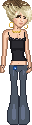

HTML for Newbies
Every trick on the home page is plain HTML and CSS, with nothing to install or build. Each lesson below shows the effect, then the code that makes it. Copy anything you like.
1. View Source
This is how I learned. Right-click any page and pick View Page Source, or press Ctrl+U (⌘+Option+U on a Mac). You'll see the exact files this site sends you: index.html, y2k.css (the shared look), style.css (this site's own layout), and portal.js. There's a surprise near the top of the home page's source.
2. Beveled buttons
A bevel is just four border colors. Light on the top and left, dark on the bottom and right, so the button looks lit from the top left. Swap them while it's pressed and it sinks in.
.btn {
background: linear-gradient(180deg, #ffffff, #d9dde6);
border: 2px solid;
border-color: #ffffff #8a91a3 #8a91a3 #ffffff;
}
.btn:active {
border-color: #8a91a3 #ffffff #ffffff #8a91a3;
}The four colors go top, right, bottom, left, clockwise from noon.
3. Title bars
Every box on the portal has a window-style title bar. It's a heading with a sideways gradient behind it and a tiny shadow under the white text.
.bar {
color: #fff;
text-shadow: 1px 1px 0 rgba(0, 0, 0, .35);
background: linear-gradient(90deg, #05506e, #0a86a8 70%, #22bfd8);
}4. 88x31 buttons
The tiny badges are always 88 pixels wide and 31 tall. People traded them to link to each other's sites. These ones are drawn with CSS instead of images, so the patterns come from gradients.
.siena.codes groover
.siena.codes blinkie
.siena.codes
The checkerboard is one conic-gradient split into four quarters, tiled every 15 pixels. The white text-shadow makes the words readable over the pattern.
.b88 {
display: block;
width: 88px;
height: 31px;
font: 9px/11px Verdana, sans-serif;
border: 1px solid #000;
}
.b-quilt {
background:
conic-gradient(#f8d98c 0 25%, #a8d4e6 0 50%,
#f8d98c 0 75%, #a8d4e6 0) 0 0 / 15px 15px;
text-shadow: 0 0 3px #fff, 0 0 3px #fff;
}Want a real image file instead? Make one at 88x31.siena.codes.
5. Starry background
The page background stacks three layers. Two are grids of tiny white dots made with radial-gradient, at different spacings so they don't line up. The third is the sky fade. background-attachment: fixed pins the stars in place while you scroll.
body {
background-image:
radial-gradient(circle at 25% 25%, rgba(255,255,255,.55) 0 1.5px, transparent 2px),
radial-gradient(circle at 75% 70%, rgba(255,255,255,.4) 0 1px, transparent 1.5px),
linear-gradient(180deg, #22bfd8, #d2f5fb);
background-size: 28px 28px, 41px 41px, 100% 100%;
background-attachment: fixed;
}6. Chrome logo
The shiny logo is a gradient painted behind the text, then clipped to the letter shapes. The hard stop at 50% makes it look like metal. A thin outline sharpens the edges.
.logo a {
background: linear-gradient(180deg,
#0a86a8 0%, #d2f5fb 45%, #05506e 50%, #22bfd8 100%);
-webkit-background-clip: text;
background-clip: text;
color: transparent;
-webkit-text-stroke: 1px #05506e;
}7. Scrolling ticker
Old sites used the <marquee> tag. It still works in most browsers, but the HTML standard lists it as obsolete, so the What's New bar uses a CSS animation instead. The list starts just past the right edge, slides all the way out on the left, and starts over. Hover pauses it, and so does the little button on the end for anyone without a mouse.
- you are reading a tutorial
- pause me by hovering
.ticker-items {
display: flex;
animation: scroll 38s linear infinite;
}
.ticker:hover .ticker-items {
animation-play-state: paused;
}
@keyframes scroll {
to { transform: translateX(-100%); }
}8. Blinking "new!"
The <blink> tag is gone for good, but CSS can still do it. steps(2) makes the animation jump between on and off instead of fading.
.new {
animation: blink 1.2s steps(2, start) infinite;
}
@keyframes blink {
to { visibility: hidden; }
}9. Pixel art
Scale a small pixel image up and browsers blur it. image-rendering: pixelated stops the blur, so every pixel stays square. The webmaster doll is 32 by 125 pixels, shown at double size.

<img src="img/webmaster.png" width="64" height="250"
style="image-rendering: pixelated" alt="...">The sparkle and heart cursors are drawn from text. Each letter is one pixel color, and a dot means see-through. A script paints the grid onto a <canvas>, turns it into an image, and hands it to CSS cursor.
....o.... ....o.... ...oyo... ..oyyyo.. ooyywyyoo ..oyyyo.. ...oyo... ....o.... ....o....
const colors = { o: "#05506e", y: "#fff0aa", w: "#ffffff" };
rows.forEach((row, y) =>
[...row].forEach((ch, x) => {
if (!colors[ch]) return;
ctx.fillStyle = colors[ch];
ctx.fillRect(x, y, 1, 1);
})
);
document.documentElement.style.cursor =
`url(${canvas.toDataURL()}) 4 4, auto`;The two numbers after the image are the hotspot, the exact pixel that does the clicking.
10. Hit counter
Old hit counters were images served by someone else's computer, which counted every visitor. This one stores a number in your own browser with localStorage. It only counts your visits, and nobody else can see it.
let n = Number(localStorage.getItem("visits") || 0) + 1;
localStorage.setItem("visits", String(n));
counter.textContent = String(n).padStart(6, "0");11. Be kind to visitors
Some people get dizzy from moving things, and their computer can say so. This turns the animations off for them.
@media (prefers-reduced-motion: reduce) {
.spark, .new, .ticker-items { animation: none; }
}Give every image an alt description for people using screen readers. Keep a visible outline on whatever has keyboard focus. Try pressing Tab on this page to see it.